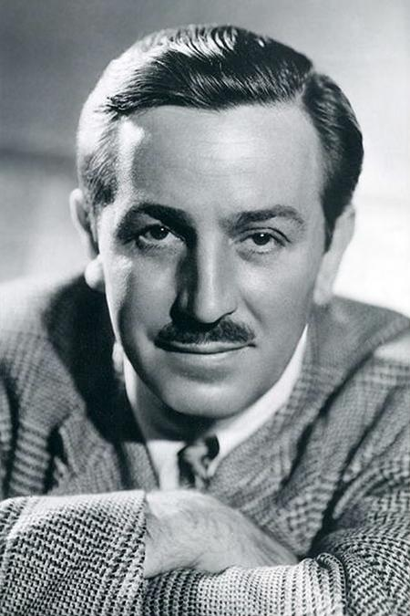
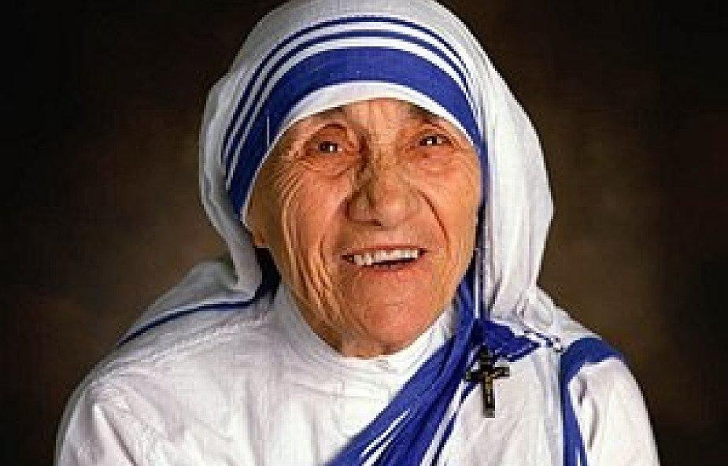

JANEK MELAOsobą, która może być inspiracją dla młodych ludzi, może być Jan Mela. Jako trzynastolatek popełnił błąd, który naznaczył go na całe życie. W tragicznym wypadku stracił rękę i nogę. Nie poddał się jednak. Wziął udział w wyprawie polarnej i jako najmłodszy człowiek w historii zdobył obydwa bieguny. Założył też własną fundację, która ma na celu pomagać ludziom takim jak on. Zbiera pieniądze na zakup protez dla nastolatków, którzy ulegli nieszczęśliwym wypadkom. Mimo tragicznych doświadczeń, pozostał on skromnym i wiecznie uśmiechniętym chłopakiem. Uważam, że jest on doskonałym przykładem tego, że nigdy nie należy się w życiu poddawać, bo nawet w najgorszym momencie w życiu pozostaje światło nadziei na to, że będzie lepiej. Dla nas, nastolatków, byle błahostka staje się ogromnym problemem. Na przykładzie Jana, możemy dostrzec, że są na świecie większe tragedie, ale i z nimi można sobie poradzić. Jan Mela pokazuje nam też, że nigdy nie jest tak źle, by nie można było pomagać innym. Dotknięty strasznym nieszczęściem, nie zamknął się w sobie, ale zaczął nieść pomoc innym, podobnie cierpiącym. Jego postać jest dla mnie inspiracją. Uważam, że jest to wzór prawdziwego dobra.MARK ZUCKERBERGNajmłodszy miliarder świata Mark Zuckerberg zdobył majątek jako szef Facebooka, serwisu internetowego łączącego przyjaciół. Wraz z grupą kolegów 4 lutego 2004 roku stworzył serwis TheFacebook, później po prostu Facebook, gdzie z początku użytkownicy mogli dodawać się do znajomych, dzielić wiadomościami oraz zdjęciami. Od tamtej Facebook m.in. stworzył Messengera, przejął WhatsApp i Instagrama i zdobył poprzez wszystkie serwisy ponad miliard użytkowników. Już w wieku 10 lat Mark po raz pierwszy zainteresował się możliwościami, jakie jest w stanie zapewnić zwykły domowy PC podłączony do internetu. Przez długi czas ćwiczył swoje umiejętności m.in. tworząc proste gry. Jego pierwszy naprawdę głośny projekt ujrzał jednak światło dzienne dopiero w okolicach 2003 roku. Odtwarzacz Synapse Media Player robił to, co dziś wydaje się standardem – potrafił dostosować listy odtwarzania do preferencji słuchającego.WALT DISNEYWalt Disney stworzył imperium, które jest rozpoznawane na całym świecie. Razem z bratem założył firmę Disney Brothers Studio, którą później przemianował na Walt Disney Studio. Uważany jest za ojca Myszki Miki i Kaczora Donalda. Naprawdę nazywał się Walter Elias Disney. Był skomplikowaną postacią, ale do historii przeszedł jako przyjaciel dzieci. To dla nich stworzył świat bajek, a także pierwsze na świecie parki rozrywki. W całej swojej karierze zdobył 26 nagród Amerykańskiej Akademii Filmowej i niezliczone ilości innych wyróżnień. Honorowego Oscara otrzymał za film „Królewna Śnieżka i siedmiu krasnoludków” i było to aż osiem statuetek: 1 normalnej wielkości i 7 małych. MATKA TERESA Z KALKUTYMatka Teresa z Kalkuty, a właściwie Agnes Gonxha Bojaxhiu, była zakonnicą, założycielką zgromadzenia Misjonarek Miłości, laureatką Pokojowej Nagrody Nobla. Założyła słynną później na cały świat Kongregację Misjonarek Miłości, która w 1956 roku zdobyła status zakonu. Przez ponad 45 lat prowadziła hospicja dla umierających, ubogich, chorych i sierot. Już w latach 70. była znana na świecie jako obrończyni biednych i bezbronnych. O jej życiu i działalności powstawały liczne filmy i książki. W 1979 roku otrzymała Pokojową Nagrodę Nobla, a rok później najwyższe indyjskie odznaczenie państwowe – order Bharat Ratna – za pracę humanitarną. Misjonarki Miłości systematycznie rozwijały się i w roku jej śmierci obsługiwały 610 misji w 123 krajach (hospicja, domy dla zakażonych HIV/AIDS, trądem i gruźlicą, jadłodajnie, programy wspierające dzieci i rodziny, domy dziecka i szkoły). |
|---|